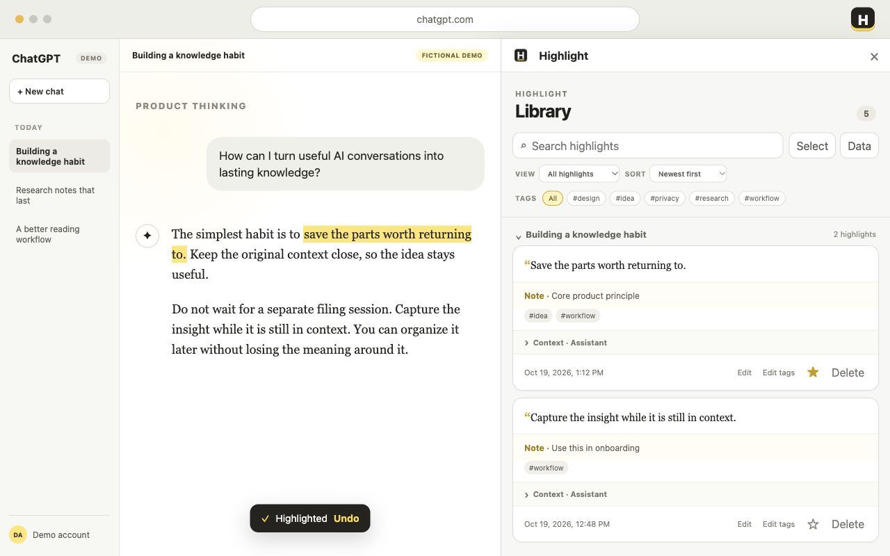
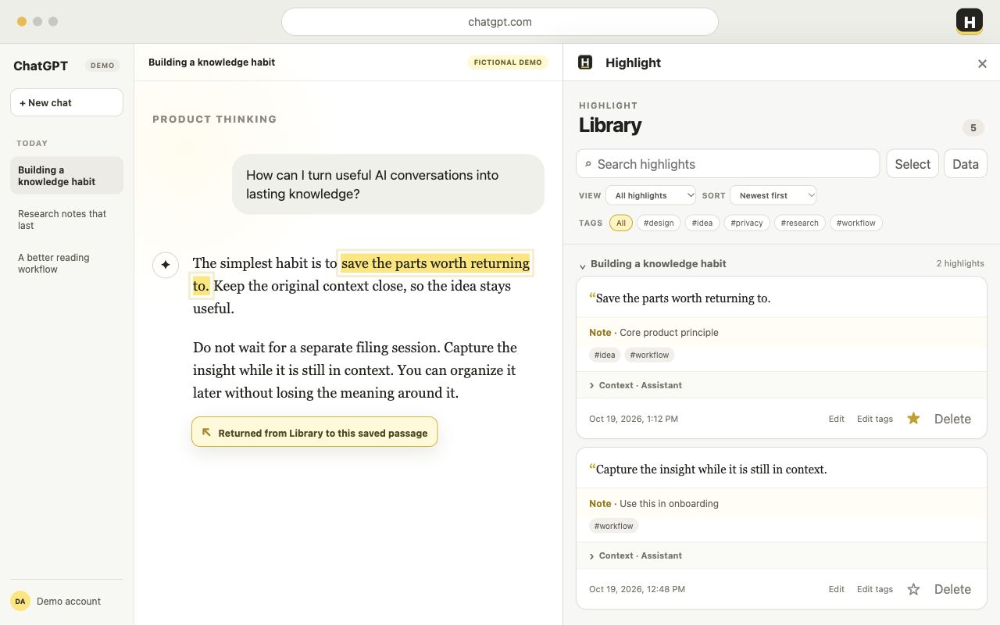
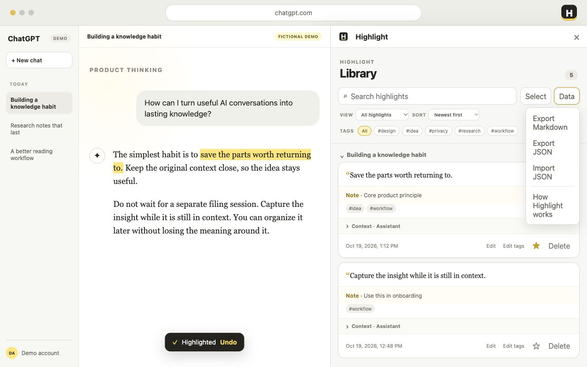

Highlight
Select a passage in ChatGPT, right-click, and choose Highlight. It remains visible after refresh.
A personal Library for ChatGPT
Highlight turns useful passages from your ChatGPT conversations into a searchable, organized Library—and brings you back to the original context when you need it.
Local storage · No Highlight account · No analytics

Why Highlight
Highlight brings them back within reach—together with the selected words, nearby context, source conversation, notes, tags, and starred state. The original ChatGPT text remains structurally untouched.
Product philosophy
Good conversations scatter valuable fragments everywhere: an answer that helps now, a sentence that inspires a different way of thinking, or an idea whose value only becomes clear later.
Highlight exists to pick up those fragments—with their words, context, and path back—so they can become part of what you know instead of disappearing into chat history.
Useful now Keep the answer you need for the work in front of you.
Inspiring Hold on to the thought that changes how you see the problem.
Worth later Save the fragment that may reveal its value with time.
See Highlight in action
Follow the cursor from saving a passage to organizing it with Notes, Tags, Stars, and Sort—then returning to the source and exporting the Library.
Fictional demo content · Synchronized captions · English narration generated by your browser · No personal ChatGPT data
How it works
Save passages, add context, and build your personal Library.
Select a passage in ChatGPT, right-click, and choose Highlight. It remains visible after refresh.
Search your Library, add notes and tags, star important ideas, and manage multiple results at once.
Choose a saved card to reopen its source conversation and locate the highlighted passage.
Shape your Library
Saving is only the first step. Notes, tags, stars, and sorting help a collection of fragments become a Library you can actually use.
Add your interpretation, a next step, or the reason the passage mattered to you.
Name recurring themes, connect ideas across conversations, and filter the Library by topic.
Mark the ideas that deserve attention and bring them into one focused Starred view.
Move between newest-first and oldest-first without losing your current view or tag filter.

Keep the source attached
For long conversations, Highlight progressively searches earlier content, centers the recovered passage, and keeps the yellow highlight visible.
Location recovery depends on the source conversation still containing sufficiently similar text.

Your Library, your data
Highlight stores its Library in Chrome on your device. Export readable Markdown or a complete JSON backup, then import that backup when needed.
Read the privacy policyHighlight V1.0 is being prepared for the Chrome Web Store.